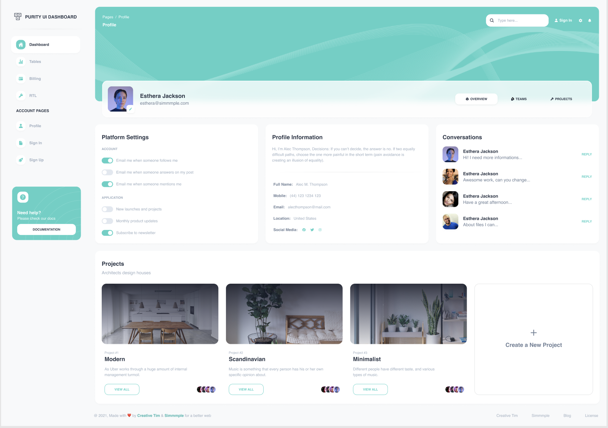

บทเรียน 16 · Refactor เป็น Component (Refactor to Components)
สรุปและก้าวต่อไป
Wrap Up
ยินดีด้วย 🎉
ตอนนี้คุณมี Purity Dashboard เวอร์ชัน Tailwind ที่สร้างร่วมกับ Cursor Agent และผ่านการตรวจ responsive, accessibility, maintainability รวมถึงการ refactor แล้ว
| Route | หน้า | สถานะ |
|---|---|---|
/ | Dashboard | เสร็จ — stat cards, promo, กราฟ placeholder, ตาราง, timeline |
/tables | Tables | เสร็จ — Authors + Projects พร้อม badge และ progress bar |
/signup | Sign Up | เสร็จ — layout แยกนอก shell, ฟอร์มพร้อม toggle จริง |
/profile | Profile | โจทย์ของคุณ — ด้านล่าง |
โปรเจกต์ยังมี component ที่ใช้ซ้ำได้ ได้แก่ Button, StatCard, NavItem, StatusBadge และ ProgressBar พร้อมกับขั้นตอนการทำงานที่เราได้ฝึกจนครบลูป
ทักษะทั้งสี่ ↔ บทเรียน
- ถอด screenshot/wireframe/requirement เป็น prompt ที่ชัดเจน → บทเรียน 06 (อ่าน UI), 07 (กายวิภาคสี่ส่วน), 08 (Figma)
- ใช้ Cursor Agent สร้าง UI ฉบับแรก → บทเรียน 09–11 (shell, Dashboard, Tables + Sign Up)
- ตรวจโค้ด Tailwind ที่ AI สร้าง → บทเรียน 12 (responsive), 13 (accessibility), 14 (maintainability)
- Refactor เป็น component ที่ใช้ซ้ำได้ → บทเรียน 15
ลูป prompt → generate → review → refactor ไม่ได้จำกัดอยู่ที่ workshop นี้ คุณสามารถนำไปปรับใช้กับงาน UI, framework และดีไซน์แบบอื่นได้
โจทย์ใหญ่: หน้า Profile

โจทย์นี้ให้คุณลองทำทุกขั้นตอนด้วยตัวเองตั้งแต่ต้นจนจบ
- Decompose (วิชาบทเรียน 06) — แบ่ง region: hero, การ์ดโปรไฟล์ที่ลอยทับ, สามคอลัมน์ (Platform Settings / Profile Information / Conversations), grid การ์ดโปรเจกต์
- เขียน prompt สี่ส่วน (07) — อ่านค่าประกอบจาก Figma (08); อย่าลืมระบุว่า route
/profileอยู่ใน DashboardLayout และให้ใช้ component ที่มีอยู่ (Button, toggle pattern จากบทเรียน 13) - Generate (09) — แนบภาพ อ่าน diff ก่อน Accept
- Review สามด้าน (12–14) — จด TODO แล้วแก้ตามรายการ
- Refactor (15) — อย่างน้อยหนึ่ง component ใหม่ควรเกิดจากหน้านี้
คำแนะนำสำหรับจุดที่ต้องวางแผนเพิ่มมีดังนี้
- การ์ดลอยทับ hero — margin ติดลบ (
-mt-16) +relative/z-10 - Platform Settings — toggle 6 ตัว: ถึงเวลาแยก toggle จากบทเรียน 13 เป็น component
Toggleที่รับlabelกับdefaultChecked - แท็บ OVERVIEW / TEAMS / PROJECTS — โอกาสสร้าง component ใหม่ (ตั้งชื่อเองตาม domain — ไม่ใช่
Card2นะ) - สามคอลัมน์ — คิดเรื่องการยุบบนมือถือเองตั้งแต่ตอนเขียน prompt ไม่ใช่ตอนตรวจ
ไอเดียต่อยอด
- หน้า Billing และ RTL — มีดีไซน์ครบในไฟล์ Figma สามารถใช้ฝึกขั้นตอนเดิมเพิ่มอีกสองรอบ
- Dark mode — Tailwind มี
dark:variant ให้ทุก utility ลองเริ่มจาก token - กราฟจริง — แทน placeholder ด้วย chart library แล้วฝึกสั่ง Agent ให้ต่อ data ให้
- ข้อมูลจริง — เอาวิชา TanStack Query จากคอร์ส e-commerce มาต่อ API เข้าตารางกับ stat cards
- Deploy — วิธีเดียวกับที่เรียนในคอร์ส React (บทเรียน 35 ของคอร์สนั้น) ใช้ได้เลย
ส่งท้าย
เครื่องมือ AI ช่วย generate โค้ดได้เร็วขึ้นเรื่อย ๆ แต่ผลลัพธ์ยังขึ้นอยู่กับทักษะที่เราฝึกใน workshop นี้: อ่านโครงสร้างดีไซน์ เขียนความต้องการให้ชัด และ review โค้ดอย่างเป็นระบบ ทักษะเหล่านี้ช่วยให้เราใช้ AI ได้ตรงกับงานและรับผิดชอบผลลัพธ์ได้
ให้ AI ช่วยทำงานได้เต็มที่ แต่ก่อนนำโค้ดไปใช้จริง เราต้องอ่าน เข้าใจ และตรวจสอบโค้ดนั้นได้
เจอกันในโปรเจกต์ถัดไป 🚀